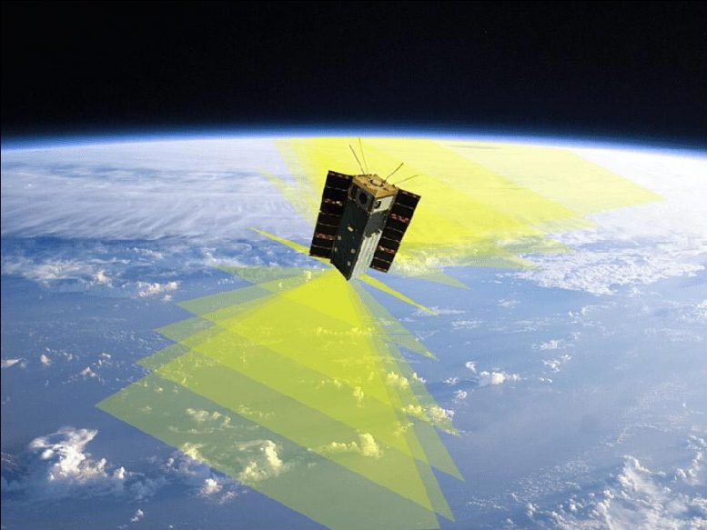

Setting the following spacecraft to maximize drag and the leader to minimize drag will cause the follower to drop in altitude and catch up to the leader. Credit: NASA/Sabrina Thompson
Under Thompson’s plan, scientists would establish a set of requirements for observations and define high-value targets. Then the software would take over, enabling a spacecraft swarm to figure out how to move relative to one another to best observe these targets. Strategies might also change based on time of day, season, or the region being observed. The spacecraft also would use onboard machine learning to improve viewing strategies over time. “There are several types of swarm configuration being considered,” Thompson said. “One might be a swarm where satellites will be in different orbits, which will allow them to view a cloud or other phenomenon at different angles. Another swarm could view the same phenomena with similar view, but at different times of the day. A third type of swarm might combine both, with some satellites in the same orbit, following one another with some time offset, and other satellites which may be in orbits with different altitudes and/or inclinations.” A SmallSat like this one, working with a swarm of similar spacecraft with more narrow-angle, high-resolution polarimeters, could potentially revolutionize understanding of weather formation and processes. Credit: NASA/SDL/Jose Vanderlei Martins
While a swarm would stay within the same orbit, individual spacecraft could even use something called differential drag control — manipulating the forces caused by Earth’s atmosphere dragging against the orbiting craft — to control the time separation between each spacecraft relative to others in the swarm, she said. “The length of time it takes to perform a differential drag maneuver depends on the spacecraft mass and area, as well as the orbital altitude. For instance, it can take as long as one year or as short as a couple of days, even hours.” “With multiple spacecraft in one formation to view the same target,” Thompson said, “you can see a cloud, for instance, not just from the top, but from the sides as well.” In a different formation, you can see that cloud at different stages of its life-cycle from multiple SmallSats passing at different times.